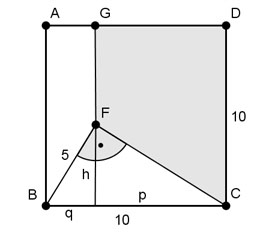

Pythagoras Aufgabe 84 Berechnen Sie die Größe der farbigen Fläche A in mm².  Kathetensatz im Dreieck BCF: BF² = BC * q |:BC BF² q = ----- BC 5² q = ---- 10 q = 2,5 mm p = 10 mm - q = 10 mm - 2,5 mm = 7,5 mm Satz von Pythagoras im Dreieck BHF: BF² = q² + h² | -BH² h² = BF² - q² h² = 5² mm² - 2,5² mm² = 18,75 mm² |√ h = 4,3 mm FG = HG – h = 10 mm - ,3 mm = 5,7 mm FG + CD A = --------- * p 2 5,7 + 10 mm A = ------------- * 7,5 mm 2 A = 58,9 mm²